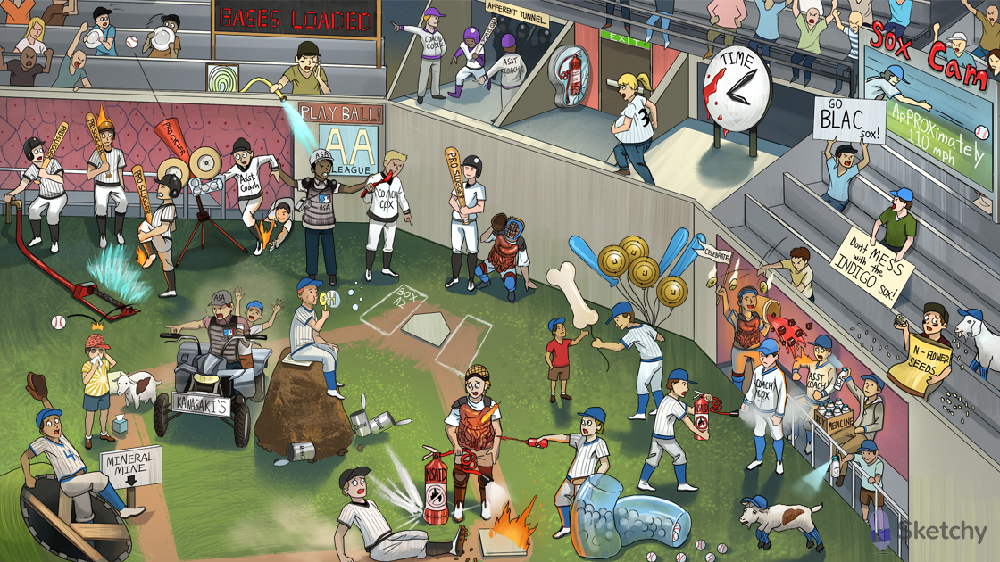

AA league: arachidonic acid (precursor molecule to prostanoids and leukotrienes
PLA2y ball: phospholipase A2 (PLA2) hydrolyzes arachidonic acid from the cell membrane
Thrombus ice cubes: celecoxib may increase the risk of ischemic cardiovascular disease
Head coach Cox: cyclooxygenase-1 (COX-1) is constitutively expressed
Assistant coach: cyclooxygenase-2 (COX-2) expression is induced by inflammation
Batter’s box: thromboxane A2 (TXA2) is synthesized by COX-1
Twisted red hat: TXA2 (synthesized by COX-1) causes vasoconstriction
Pro-slugger bat: prostaglandins
Pro-slugger protecting catcher with gastrointestinal pads: COX-1 synthesizes gastric
cytoprotective prostaglandin
Assistant coach in endothelial dugout: COX-2 is expressed in vascular endothelial and smooth muscle cells
Pro-cycler pitching machine: prostacyclin (PGI2) is synthesized by COX-2
Pro-cycler’s dilated red barrel: PGI2 causes vasodilation
Pro-cycler dispersing the plates: PGI2 inhibits platelet aggregation
Pro-sluggers at the afferent tunnel: COX-1 and COX-2 synthesize prostaglandins that dilate the afferent arteriole
Pro-slugger activating the sprinkler: COX-2 synthesizes prostaglandins that increase
vascular permeability
Pro-slugger in pain: COX-2 synthesizes prostaglandins that increase pain sensitivity
Pro-slugger with flaming head: COX-2 synthesizes prostaglandins that induce fever
Head coach Cox: cyclooxygenase-1 (COX-1) is constitutively expressed
Assistant coach: cyclooxygenase-2 (COX-2) expression is induced by inflammation
Anti-inflammatory fire extinguisher: non-steroidal anti-inflammatory drugs (NSAIDs)
Head coach and assistant coach doused by fire extinguisher: NSAIDs reversibly inhibit both COX-1 and COX-2

BLAC sox: diclofenac and ketorolac (NSAIDs)
INDIGO sox: indomethacin (NSAID)
SOX CAM: meloxicam and piroxicam (NSAIDs)
ApPROXimately 110 mph: naproxen (NSAID)
Ketchup on clock: inhibition of COX-1 by NSAIDs can prolong bleeding time
Bursting from high pressure: NSAIDs can increase blood pressure due to COX inhibition in the kidney, decreasing sodium excretion
Ketchup on the gastrointestinal pads: inhibition of COX-1 by NSAIDs can cause GI bleeding
Burned hole in the gastrointestinal pads: inhibition of COX-1 by NSAIDs can cause gastric inflammation, erosions, and ulceration
Baseball-filled kidney containers: NSAIDs can cause acute interstitial nephritis
Constricted proximal end of hose: NSAIDs cause afferent arteriole vasoconstriction, decreasing GFR
Sloughing off cleat spikes: NSAIDs can cause renal papillary necrosis (sloughing of renal papillae)
Elevated “lift-ium” balloons: NSAIDs can increase serum lithium concentrations
Plastic Bone-shaped balloon: NSAIDs (indomethacin most commonly) can cause aplastic anemia
Depleted mineral mine: NSAIDs can cause hypoaldosteronism (decreased mineralocorticoids)
Big K: NSAID induced hypoaldosteronism can cause hyperkalemia
ASA umpire: aspirin
ASA umpire ejecting the coaches: aspirin irreversibly inhibits COX-1 and COX-2
Acetylation whistle: aspirin acetylates COX-1 and COX-2 resulting in irreversible inhibition
Child in Kawasaki’s ATV: aspirin is useful in Kawasaki disease (the most common vasculitis syndrome of childhood)
Rays: Aspirin use in children can lead to development of Reye’s syndrome (rapidly
progressive encephalopathy with hepatic dysfunction
Tissue box: Reye’s syndrome occurs when a child is given aspirin in the setting of a viral illnes
Brain hat: Reye’s syndrome encephalopathy (e.g. confusion, seizure, coma)
Fat liver spot: Reye’s syndrome hepatic dysfunction (e.g. hepatic steatosis, hepatomegaly)
Mudpile: aspirin toxicity can cause an anion gap metabolic acidosis (S in MUDPILES)
Blowing “OH-” bubbles: aspirin causes a respiratory alkalosis
Tin cans: aspirin can cause tinnitus
Charcoal lines: activated charcoal can be used to absorb aspirin in setting of acute toxicity
Bases loaded hose: alkalinization of the serum and urine with a basic solution (e.g. sodium bicarbonate) increases the renal excretion of aspirin
Fire extinguisher behind cracked kidney-shaped glass: minimize NSAID use in patients at risk for acute kidney injury
Exiting pregnant lady: avoid NSAIDs in 3rd trimester due to risk of premature closure of ductus arteriosus (highest risk with indomethacin and ibuprofen)
Celebrating catcher drenching the assistant coach: celecoxib is a selective COX-2 inhibitor
Clean gastrointestinal pads: celecoxib has a reduced ulcer and bleeding risk by avoiding COX-1 inihibtion
Rotten sulfur eggs: celecoxib is a sulfa drug
Icy medicine spray on assistant coach: acetaminophen inhibits COX-2, acting as an antipyretic and analgesic (not anti-inflammatory)
Goat scared by the icy-medicine: toxic levels of acetaminophen deplete glutathione in the liver (inactivates the toxic metabolite: NAPQI)
Liver spot: acetaminophen causes hepatotoxicity (via the toxic metabolite: NAPQI)
N-flower seeds: n-acetylcysteine
Goat attracted by N-flower seeds: n-acetylcysteine restores hepatic glutathione stores to treat acetaminophen hepatotoxicity
Charcoal lines: activated charcoal can be used to absorb acetaminophen in setting of acute toxicity